Konum
Konum sekmesi ve Platformlar sekmesinin bilgileri *.wtg dosyalarında saklanır. Bu dosyaların yönetimi için aşağıdaki seçenekler mevcuttur:
 : Menüyü başlatır. : Menüyü başlatır.
- : *.wtg dosyasını yükler.
- : *.wtg dosyası ekler.
- 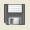: *.wtg dosyasını kaydeder.
Rüzgar türbini (= WTG) konumlarının oluşturulması manuel olarak veya konum koleksiyonlarından yapılabilir.
Rüzgar türbini konumları oluşturulurken, Tipler sekmesindeki tip 1, türbin tipi olarak alınır.
Konumları oluşturmadan önce en az bir türbin tipi oluşturulması önerilir, çünkü çizim yaparken bu tipler dikkate alınır.
Rüzgar türbini konumlarının manuel olarak oluşturulması için aşağıdaki seçenekler mevcuttur:
- : Bir rüzgar türbini konumu ekler.
- : Rüzgar türbininin konumunu siler.
X, Y koordinatlarının atanması, Tıklama Modunda veya Sayısal Modda yapılabilir. Tıklama Modunda atama yapmak için düğmesine ve ardından X,Y'yi almak için ekrana tıklanır.
Koleksiyonlardan rüzgar türbini konumları oluşturmak için aşağıdaki olanaklar mevcuttur:
- 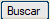: Sembollerden konumlar oluşturur.
- : Bir *.csv dosyasını içe aktararak konumlar oluşturur.
 düğmesinden mevcut konumlarla bir *.csv dosyası kaydedilebilir, bu dosya değiştirilip yeniden yüklenebilir, böylece yapılan değişiklikler yansıtılmış olur. düğmesinden mevcut konumlarla bir *.csv dosyası kaydedilebilir, bu dosya değiştirilip yeniden yüklenebilir, böylece yapılan değişiklikler yansıtılmış olur.
Z'nin atanması için, hem manuel modda hem de türbin koleksiyonlarından, aşağıdaki şekilde hareket edilir:
- Rüzgar türbinlerinin konumları oluşturulurken, Tipler sekmesinde tanımlanmış bir türbin tipi kullanılır.
- Her tipin minimum Z hesaplama yarıçapı vardır. Bu yarıçap ile, konumlar oluşturulurken, belirtilen yarıçap için dolgu olmayan Z'ye karşılık gelen minimum Z hesaplanır.
- Hesaplanan minimum Z, yapılandırmasındaki yuvarlama kullanılarak otomatik olarak tavan Z'sine ve tesviye Z'sine atanır.
- Daha sonra tavan Z'si ve tesviye Z'si manuel olarak değiştirilebilir.
- Bu Z'ler, her bir alt tesviye yüzeyi için uyarlanabilecekleri Platformlar Sekmesine geçer.
- simgesine tıklandığında, yapılandırmada tanımlanan yuvarlama dikkate alınarak minimum Z kopyalanır.
düğmesinden erişilebilen ve aşağıdaki seçenekleri içeren bir yapılandırma mevcuttur:
- Kotları yuvarla: Tavan Z'si ve tesviye Z'sinin yuvarlamasının (minimum Z'den itibaren) seçilebildiği açılır menü.
- [ ] Temel metrajları oluştur:
Aktif ise, temel metrajlarını otomatik olarak oluşturur. Aktif değilse, temel metrajları 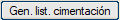 düğmesinden oluşturulabilir. Temel, Tipler sekmesinde tanımlanır.
- [ ] Temel / kazı hatları: Aktif ise, temel ve kazı hatları çizilir. Temel, Tipler sekmesinde tanımlanır.
- [ ] Sınır çizgileri: Aktif ise, sınır çizgileri çizilir. Sınır çizgileri, Tipler sekmesinde tanımlanır.
- [ ] Profil hatları: Aktif ise, Profil sekmesindeki profiller için hatlar çizilir. Bu profil hatları, Tipler sekmesinde tanımlanır.
- [ ] Tüm WTG adlarını gör:
Aktif ise, tüm rüzgar türbinlerinin (WTG) adları görüntülenir. Aktif değilse, sadece mevcut WTG'nin adı görüntülenir.
- [ ] Tüm tesviye yüzeylerini gör:
Aktif ise, tüm rüzgar türbinlerinin montaj tesviye yüzeyleri çizilir. Aktif değilse, sadece mevcut olan çizilir.
- [ ] Üstyapı katman hatları: Aktif ise, Tipler sekmesinde tanımlanan üstyapı katman hatları çizilir.
- Temel ad: *.wtg ve *.exp dosyaları için kullanılan temel ad. Yoksa, varsayılan bir temel ad kullanılır.
- *.exp dosyası: *.wtg ile ilişkili *.exp dosyasının adı.
Rüzgar türbinlerinin konumları oluşturulduktan sonra her bir konumun montaj tesviye yüzeyleri çizilebilir. Bunun için aşağıdaki hususlar dikkate alınır:
- Tanımlanan yapılandırma dikkate alınır.
- Rüzgar türbinlerinin montaj tesviye yüzeyleri, atanmış tiplerle (*.tge dosyaları) çizilecektir. Bu tiplerin daha önce Tipler sekmesinde oluşturulmuş olması gerekir.
- Rüzgar türbini konumları listesinde aktif olan montaj tesviye yüzeyleri çizilecektir.
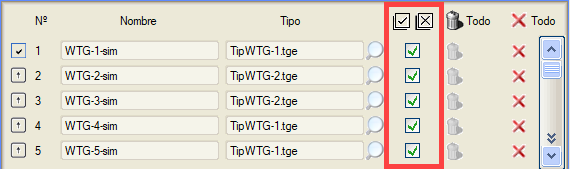
- Çizim yaparken, Platformlar sekmesinde tanımlanan Z'ler ve eğimler kullanılır. Platformlar sekmesinde hiçbir şey değiştirilmediyse, kullanılan Z'ler Konum sekmesinde tanımlananlarla aynıdır.
- Çizmek için üzerine tıklayın.
Montaj tesviye yüzeylerini silmek için 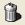 simgeleri kullanılabilir. Ayrıca kaynak kontrollerinden de silinebilirler.
Rüzgar türbini konumları arasında gezinmek için aşağıdaki seçenekler kullanılabilir:
 : Listenin ilk rüzgar türbinine gider. : Listenin ilk rüzgar türbinine gider.
- : Listenin son rüzgar türbinine gider.
- : Önceki rüzgar türbinine gider.
- : Sonraki rüzgar türbinine gider.
 : Bir rüzgar türbinine tıklayarak seçip ona gidilebilir. : Bir rüzgar türbinine tıklayarak seçip ona gidilebilir.
- Mevcut kutucuğu: Gitmek istenen rüzgar türbini yazılarak gidilebilir.
- : Rüzgar türbinine yakınlaşır.
Her bir rüzgar türbini montaj tesviye yüzeyine aşağıdaki işlemler uygulanabilir:
- Azimut: Sayısal olarak veya düğmesi ile ekranda interaktif olarak değiştirilebilir.
- Taraf: Atanmış tipin (Tipler sekmesi) simetrisinin hangi tarafa (sağ / sol) yapılacağı seçilebilir.
- Konum: Atanmış tipe (Tipler sekmesi) göre simetrinin nereye yapılmak istendiği (Başlangıç / Bitiş) seçilebilir.
- İlişkili eksen: Her konuma bir eksen ilişkilendirilebilir, ya numara yazılarak, Ara düğmesine basılarak ya da ekranda (tıklayarak) seçilerek.
Rüzgar türbinlerinin montaj tesviye yüzeyleri çizildikten sonra, tesviye hesaplamaları için tesviye yüzeyleri menüsüne şu düğmeye basılarak erişilebilir:
Tipler
Bu sekmede, rüzgar türbinlerinin montaj platformu dağılım tipleri oluşturulur. Her tip *.tge uzantılı bir dosyada saklanır, kaydetme ve yükleme düğmeleri mevcuttur. *.wtg dosyası kaydedildiğinde, Tipler sekmesindeki tüm *.tge dosyaları da kaydedilir. Konum sekmesinde, her bir rüzgar türbini konumunda kullanılacak bir tip bataryası (= *.tge dosyaları bataryası) oluşturulabilir.
Her tip, bu Tipler sekmesinde tanımlanan bilgileri içerir (montaj ve depolama tesviye yüzeylerinin geometrileri, sınır çizgileri, profil hatları, Tesviye Yüzeyleri menüsünde kullanılacak üstyapı katman numarası, temel değişkenleri, vb.).
Tiplerin yönetimi için aşağıdaki seçenekler mevcuttur:
- : Bir tip ekler.
- : Bir tip araya ekler.
- : Tipin bir kopyasını araya ekler.
- 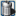: Bir tipi siler.
Her tip, temel geometrisini tanımlama imkanına sahiptir, bunun için "Temel" düğmesinin 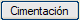 yanındaki kutucuğunu aktif hale getirmek gerekir. Temel geometrisini tanımlayan değişkenler aşağıdaki resimde gösterilmiştir:
Temel değişkenleri:
- Kaide: Yarıçap ve yükseklik ile tanımlanır.
- Radye: Yarıçap ve kalınlık ile tanımlanır.
- Gövde: Yükseklik veya Eğim ile verilebilir.
- Grobeton: Kullanımı için kutucuk aktif hale getirilmelidir. Kalınlık ve yarıçap ile tanımlanır.
- Kazı: Kazı genişletmesi ve şev ile tanımlanır.
- Fazla Kazı: Kullanımı için kutucuk aktif hale getirilmelidir. Derinlik, yarıçaplar ve şev ile tanımlanır.
- Min. Z için hesaplama noktası: Bu nokta ile, Min. Z hesaplaması için Yarıçap hesaplanır. Noktalar için çeşitli seçenekler ve hatta özel bir değer mevcuttur.
Temel menüsündeki değişkenlerin yapılandırması *.cme dosyalarında kaydedilebilir ve geri yüklenebilir
Rüzgar türbinlerinin montaj dağılımlarının tanımı Parametrik modda veya Vektörel modda yapılabilir. Parametrik modda 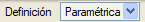 aşağıdaki değişkenler mevcuttur:
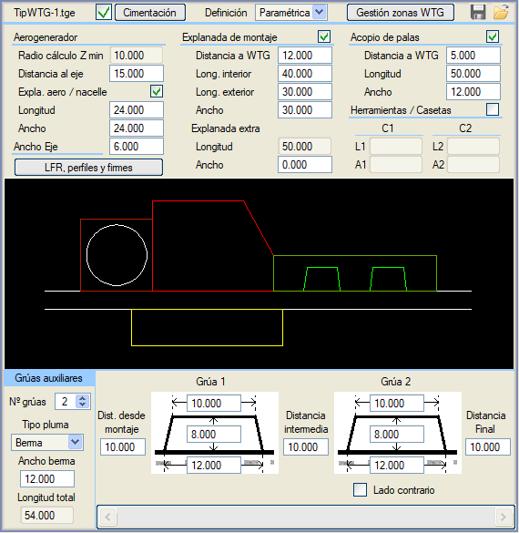
Parametrik moddaki değişkenler:
- Rüzgar Türbini:
- Min. Z hesaplama yarıçapı:
Temel geometrisi tanımı kullanılıyorsa, temel menüsünde belirtilen değerlere göre hesaplanır. Temel kullanılmıyorsa, minimum Z'nin hesaplanması için sayısal bir değer belirtilir.
- Eksene mesafe: Rüzgar türbininin yol eksenine olan mesafesi.
- Türbin / makine dairesi tesviyesi: Aktif edilirse uzunluk ve genişlik ile tanımlanır.
- Eksen genişliği: Yolun genişliği.
- Montaj tesviye yüzeyi:
- WTG'ye mesafe: Bu alt tesviye yüzeyinin rüzgar türbinine olan mesafesi.
- İç uzunluk: İç uzunluk.
- Dış uzunluk: Dış uzunluk.
- Genişlik: Bu alt tesviye yüzeyinin genişliği.
- Ekstra Tesviye Yüzeyi: Yolun diğer tarafında ekstra bir depolama tesviye yüzeyi olabilir, kullanıcı genişliği tanımlar.
- Kanat depolama alanı:
- WTG'ye mesafe: Bu alt tesviye yüzeyinin rüzgar türbinine olan mesafesi.
- Uzunluk: Uzunluk.
- Genişlik: Genişlik.
- Aletler / Konteynerler: Kullanımı için (aktivasyon kutucuğu) aktif hale getirilmelidir.
- C1: Konteyner1 alt tesviye yüzeyi, Uzunluk ve Genişlik ile.
- C2: Konteyner 2 alt tesviye yüzeyi, Uzunluk ve Genişlik ile.
- Uzunluk: Uzunluk.
- Genişlik: Genişlik.
- Sınır Çizgileri, profiller ve üstyapı katmanları
 : Sınır Çizgileri, Profil Hatları ve Üstyapı Katmanları tanımı için Vektörel moda erişir. : Sınır Çizgileri, Profil Hatları ve Üstyapı Katmanları tanımı için Vektörel moda erişir.
- Yardımcı Vinçler:
- Vinç sayısı: Bom montajı için yardımcı vinç konumlarının sayısı. Her yardımcı vinç konumu için genişlik, iç ve dış uzunluk, başlangıç, bitiş ve ara mesafeler; ayrıca bulundukları taraf tanımlanabilir.
- Bom tipi: Bom alt tesviye yüzeyinin yardımcı vinçlerinkiyle çakışıp çakışmayacağı seçilebilir.
- Palye genişliği / Bom Genişliği: Bom tipine göre genişlik.
- Toplam Uzunluk: Vinç sayısı 0 olduğunda uzunluğu vermek için aktif hale gelir. Aksi takdirde hesaplanır.
Vektörel modda tanım yapmak için 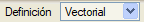 açılır menü "Vektörel" olarak değiştirilir. Vektörel moda geçildiğinde, Tipler sekmesinde parametrik modda zaten var olan Eksene mesafe (rüzgar türbininin yol eksenine mesafesi) ve Eksen Genişliği (yolun genişliği) değişkenleri kalır.
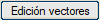 düğmesi, Istram'ın diğer araçlarına benzer bir grafik ortam açar. Her bir alt tesviye yüzeyi için kullanılacak çizgi tipleri (stilleri) aşağıdaki resimde gösterilmiştir (L3250, L2351, L2352, vb.):
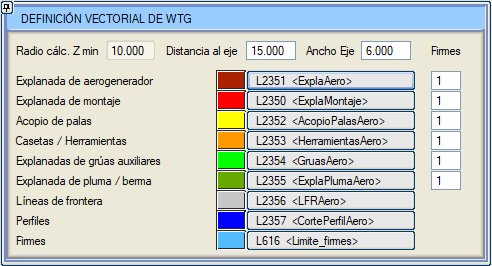
Çizgi tiplerinin atanması işini kolaylaştırmak için diyalog kutusundaki düğmeler kullanılabilir. Her bir tipin (stil) düğmesine ve ardından grafik olarak çizgilerin üzerine tıklandığında, tipler (stiller) otomatik olarak atanır.
Alt tesviye yüzeylerinin vektörleri aşağıdaki koşulları sağlamalıdır:
- Tekrarlanan noktalar olmamalıdır.
- Bitişik alt tesviye yüzeylerinin vektörleri birbiriyle kesişmemelidir.
Farklı çizgi tiplerinin (stilleri) aşağıdaki özel davranışları olacaktır:
- L2350, L2351, L2352, L2353, L2354 ve L2355 çizgi stilleri:
- Daha sonra tesviye yüzeyleri menüsünün Tesviye Yüzeyi Tacı (L53) çizgisi olarak kullanılacaktır.
- Bu diyalog kutusunda, tesviye yüzeyleri menüsünde kullanılacak üstyapı katmanı olarak kullanılacak bir Üstyapı Katman numarası (Üstyapı Katmanı sütununda) ile ilişkilidirler.
- Sınır Çizgileri Stili (L2356): Bu stildeki çizgiler daha sonra tesviye yüzeyleri menüsünde Sınır çizgisi (L308) olarak kullanılacaktır.
- Profiller Stili (L2357): Bu stildeki çizgiler daha sonra Rüzgar Santralleri'nin Profiller sekmesinde *.per dosyaları oluşturmak için kullanılacaktır.
- Üstyapı Katmanları Stili (L616):
- Bu stildeki çizgiler daha sonra tesviye yüzeyleri menüsünde Üstyapı katman hatları (L616) olarak kullanılacaktır.
- Bu çizgiler, diğer alt tesviye yüzeylerinin içindeki çizgiler olacaktır. Bir üstyapı katman hattının bir alt tesviye yüzeyinin bir segmentinden geçmesi (kenarından gitmesi) isteniyorsa, alt tesviye yüzeyinin çizgisi ile üstyapı katman hattı arasında küçük bir boşluk bırakmak gerekir (üstyapı katman hattını alt tesviye yüzeyinin içinde bırakmak).
- Şu anda alt tesviye yüzeyi başına 2 adet iç üstyapı katman hattı desteklenmektedir.
Hem Parametrik hem de Vektörel modda, rüzgar türbini montaj tesviye yüzeylerinin bölgeleri (alt tesviye yüzeyleri), düğmesi aracılığıyla erişilen aşağıdaki menüden yönetilebilir:
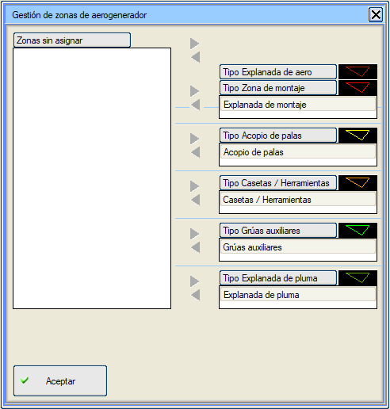
Bu menüde Bölgeler (alt tesviye yüzeyleri) gruplandırılabilir, örneğin rüzgar türbini bölgeleri montaj bölgesi ve/veya bom bölgesi ile birleştirilebilir. Veya depolama bölgesi konteyner bölgeleri ile birleştirilebilir. Bunun için, sağ sütundaki bölgeler orta sütundaki oklarla sol sütuna geçirilir; daha sonra "Atanmamış Bölgeler" seçilir ve birleştirilecek bölgeler oklarla istenen tipe sağ sütuna geçirilir.
Platformlar
Konum sekmesi ve Platformlar sekmesinin bilgileri *.wtg dosyalarında saklanır. Bu dosyaların yönetimi için aşağıdaki seçenekler mevcuttur:
- : Menüyü başlatır.
- : *.wtg dosyasını yükler.
- : *.wtg dosyası ekler.
- : *.wtg dosyasını kaydeder.
Platformlar sekmesinde, rüzgar türbinlerinin montaj alanını oluşturan her bir alt tesviye yüzeyinin Z'leri ve eğimleri değiştirilebilir.
Bu sekmede, değiştirilecek rüzgar türbini konumunu seçmek için bir açılır menü bulunur  . Ayrıca ekranda tıklayarak seçilebilir ve mevcut rüzgar türbinine yakınlaşılabilir. . Ayrıca ekranda tıklayarak seçilebilir ve mevcut rüzgar türbinine yakınlaşılabilir.
Mevcut rüzgar türbininin Z'lerini ve eğimlerini değiştirmek için aşağıdaki resimde gösterilen kontroller üzerinde işlem yapılabilir:
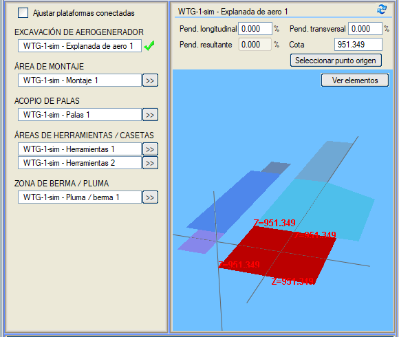
Değerleri değiştirmek için aşağıdaki hususları göz önünde bulundurun:
- Mevcut rüzgar türbini üzerinde işlem yapılır.
- Mevcut rüzgar türbini içinde, farklı alt tesviye yüzeyleri mevcut düğmelerle seçilerek değiştirilebilir. Böylece, değiştirilmekte olan alt tesviye yüzeyi:
- Planda vurgulanır.
- 3D görüntüleyicide vurgulanır, kotlar ve başlangıç noktası gösterilir.
- Mevcut alt tesviye yüzeyinin değiştirilebilecek değerleri şunlardır:
- Boyuna Eğim: Başlangıç noktasına uygulanan boyuna eğim.
- Enine Eğim: Başlangıç noktasına uygulanan enine eğim.
- Kot: Bu alt tesviye yüzeyinin tüm köşe noktalarının Z'si.
- Başlangıç noktasını değiştirmek için 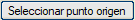 üzerine tıklayın ve ardından planda noktayı seçin.
- [ ] Bağlı platformları ayarla kutucuğu etkinleştirilerek, platformların ortak kenar boyunca bağlı kalmasını sağlama imkanı vardır.
- Yapılan değişiklikleri görmek için:
- (Platformlar sekmesi) simgesine tıklayın.
- Konum sekmesine gidin, (çizimleri) silin ve yeniden Oluştur'a tıklayın.
Genel olarak, eğim değerleri Mevcut WTG Genel Eğimleri bölümünden de değiştirilebilir. Bu değişiklikler tüm alt tesviye yüzeylerini etkiler:
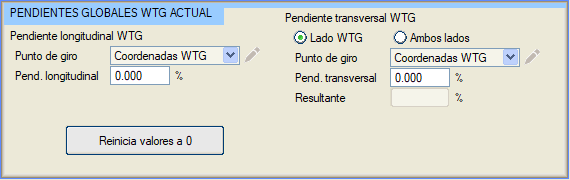
Olası eylemler şunlardır:
- WTG boyuna eğimi:
- Dönme noktasını seçin:
- WTG Koordinatları.
- Kullanıcı tarafından ile seçilebilir.
- Uygulanacak Boyuna eğim (%).
- WTG enine eğimi. 2 çalışma modu vardır:
- WTG tarafı: Tüm alt tesviye yüzeyleri bir tarafa doğru eğilir.
- Dönme noktası: Eğimin yapıldığı noktayı işaretler. Dönme noktası şunlar olabilir:
- WTG'nin koordinatları.
- Eksenin kenarı.
- Kullanıcı tarafından ile seçilebilir.
- Uygulanacak Enine eğim (%).
- Her iki taraf: Yolun her iki tarafına bağımsız olarak eğim verilir.
- İşlem şekli WTG Tarafı'na benzer, ancak şimdi her iki tarafa da uygulanır.
- Değerleri 0'a sıfırla: Eğim 0'a ve Konum sekmesindeki minimum Z'ye karşılık gelen kota geri dönülür.
Profiller
Bu sekmede oluşturulur.
- Tipler sekmesinde tanımlanan kılavuz çizgiler üzerinde *.per profil dosyaları.
- Tipler sekmesinde tanımlanan kılavuz çizgilerinin plan üzerinde etiketlenmesi.
*.per profillerinin oluşturulması için aşağıdaki seçenekler yapılandırılır:
- Oluşturulacak dosya sayısı:
- Tüm profiller için tek *.per dosyası: İşaretliyse, tüm profiller için tek bir *.per dosyası oluşturur.
- Her WTG için bir *.per dosyası: İşaretliyse, her rüzgar türbini konumu için bir *.per dosyası oluşturulur.
- [] Tümü:
- Aktif ise, tüm rüzgar türbini konumlarının profilleri oluşturulur.
- Aktif değilse, WTG'den, WTG'ye kadar belirtilen konumların profilleri oluşturulur.
- Ad: Oluşturulan *.per dosyasının veya dosyalarının adı.
- Yarı şerit genişliği: Profillerin oluşturulması hesaplaması için dikkate alınacak yarı şerit genişliği.
- Oluştur: *.per dosyalarını oluşturma düğmesi.
Etiketleme için aşağıdaki seçenekler yapılandırılır:
- [] Tümü:
- Aktif ise, tüm rüzgar türbini konumlarında etiketleme yapılır.
- Aktif değilse, WTG'den WTG'ye kutucuklarında belirtilen konumlarda etiketleme yapılır.
- [ ] Uçları işaretle: Uçları da etiketler.
- Etiketleme için 2 veri satırı vardır, her veri satırı belirli bir aralığa göre KM'lerde bir etiketlemeye karşılık gelir.
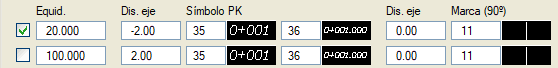
- [ ]: İlk sırada görünen bu aktivasyon kutucuğu aktif ise, o veri satırına göre etiketleme yapar.
- Aralık: Etiketleme aralığı.
- Eksene mesafe: Varsayılan olarak S35 ve S36 sembollerinin etiketlenmesi için kılavuz çizgisine olan mesafe.
- KM Sembolü
- Varsayılan S35 sembolü: ondalıksız kilometreler için kullanılan sembol.
- Varsayılan S36 sembolü: ondalıklı kilometreler için kullanılan sembol.
- Eksene mesafe: Varsayılan olarak S11 olan işaretin etiketlenmesi için kılavuz çizgisine olan mesafe.
- İşaret (90º): Varsayılan olarak S11 sembolü, tanımlanan aralıkta kılavuz çizgisi üzerinde bir işareti temsil etmek için kullanılır.
- Etiketleri oluştur: Kılavuz çizgisini planda etiketlemek için eylem düğmesi
- : Etiketleri siler.
Tesviye Yüzeyleri
Rüzgar türbinlerinin montaj tesviye yüzeylerinin çizimi Konum sekmesinden Oluşturulduktan sonra, geometrilerin ve hacim hesaplarının oluşturulması için tesviye yüzeyleri menüsüne şu düğmeden erişilebilir:
Tesviye Yüzeyleri menüsü hakkında daha fazla bilgi için, tesviye yüzeyleri yardımına başvurun. Rüzgar santralleri durumunda bazı fonksiyonların devre dışı bırakıldığını unutmayın.
|